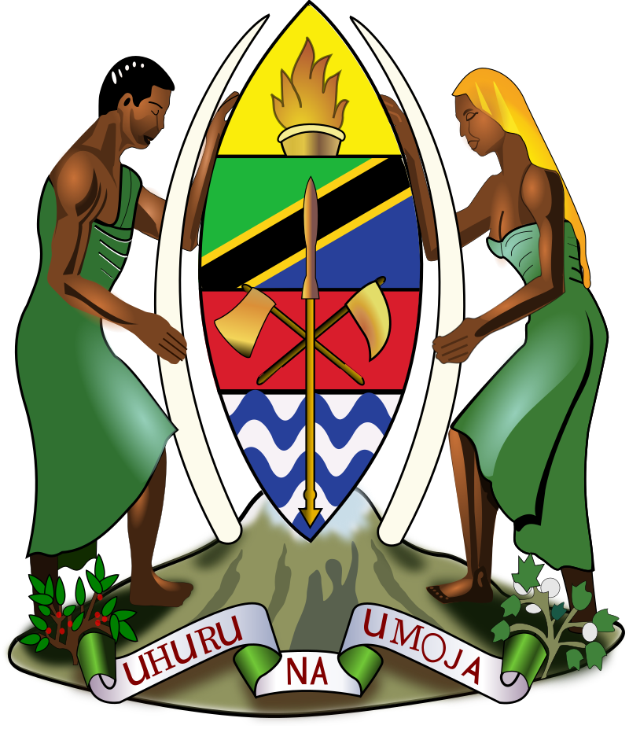
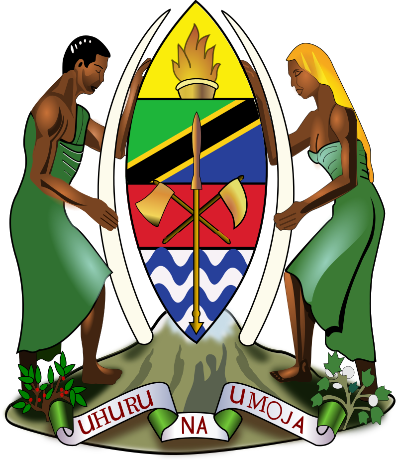

Get ready to be inspired!
Explore and Learn
Delve into Tanzania's fascinating history and diverse cultures. From the ancient civilizations to modern-day wonders, discover the stories that shaped this extraordinary country.
Marvelous Image Gallery
Journey through our curated gallery showcasing Tanzania's natural beauty and iconic landmarks. From the Serengeti plains to the crystal-clear waters of Zanzibar, let our images paint a vivid picture of what awaits you.
Test Your Knowledge
Think you know Tanzania? Challenge yourself with our "Tanzania 101" quiz! Test your knowledge of the country's geography, wildlife, and cultural landmarks.
Start Your Adventure
Whether you're planning a trip or simply exploring from afar, Tanzania offers endless opportunities for adventure and discovery. Get inspired, plan your journey, and uncover the magic of Tanzania today!